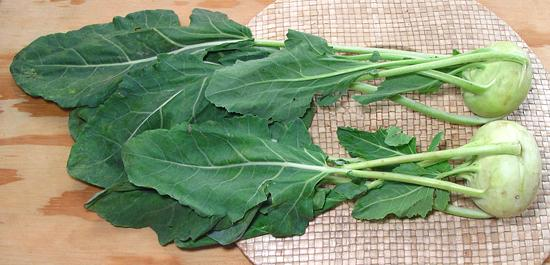
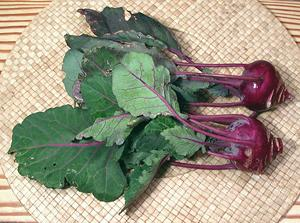

Kohlrabi

[Su Hao (Viet); Ganth Gobhi (Hindi); Knol-Khol (Tamil); Monj-hakh,
Haakh (Punjab); B. oleracea group Gongylodes]
Like head cabbage, broccoli, cauliflower, kale, collard greens, and
Brussels sprouts, Kohlrabi was created from wild cabbage by human
selection. It may look like it belongs with the root cabbages but the
"bulb" is actually a swollen stem so it's all "greens", and is similar
to broccoli stem, but sweeter and easier to work with.
Generally, Kohlrabi are eaten fairly small because they become woody
as they grow larger, but one cultivar, Gigante, is still edible in
larger sizes. Kohlrabi are usually marketed at about 2 inches in the
spring and 4 inches in the fall. Young kohlrabi can be eaten raw in
salads as well as being cooked.
More on Cabbage Greens.

Kohlrabi aren't necessarily green, but you won't find purple ones in your
local supermarket, only in the more adventurous farmer's markets. The
interior of the purple stem is pale, like the green kohlrabi.
While developed in Europe, and usually associated with northern
Europe, kohlrabi is well known in temperate zones from Pakistan through
China. It is an important vegetable in Kashmir, where they also grow
a version without a swollen stem, just leaves, called Haakh. The bulb
version is called Monj-haakh. As Knol Khol and Ganth Gobhi it is
popular in other parts India, mostly in the north. In some parts of
China it is called "Jade Turnip".
Kolrabi leaves are quite edible and nutritious, but they are tough,
much like Collard Greens, and need to be simmered at least 45 minutes
to be tender. Leaf stems will still be crunchy and a bit fibrous with
that length of cooking.
Buying:
This vegetable is so popular in the German
speaking parts of Europe, nearly every supermarket and produce market
in North America has it. To avoid fibrous bulbs, in the spring, buy
them at about 2 inches diameter, and about 4 inches in the autumn.
Storage:
In the refrigerator, the leaves will yellow
in a few days, but the stem bulb can be stored for up to a month loosely
wrapped in plastic. If you bought leafy ones, just cut the leaves
off, leaving a inch of leaf stem on the bulbs. You can cook them as
greens, but keep in mind they need long cooking similar to Colards.
Prep:
Slice about a quarter of an inch off the root
end, then peel. There are two layers of fiber under the skin but they
are thin and easily seen. Slice, dice or julienne as needed by the
recipe.
Yield:
For bulbs without leaves, after trimming and
peeling, 1 pound will yield 12 ounces (72%).
Cooking:
Young Kohlrabi is often used raw in salads
and slaws, and I have found bulbs up to 4 inches to be fine for this
use late in the year. The greens can be used interchangeably with
Collards or Kale or Chinese Broccoli.
Health & Nutrition:
Like other
members of the cabbage family, Kohlrabi is highly nutritious, with plenty
of vitamin C, vitamin A (especially the greens), vitamin K, and B-complex.
It provides minerals copper, potassium, manganese, iron, and calcium, and
is high in fiber and low in calories. It also has a good selection of
phytochemicals, such as isothiocyanates, sulforaphane, and
indole-3-carbinol that are thought to protect against prostate and
colon cancers, along with plenty of antioxidants.
cb_kohlrz 161205 - www.clovegarden.com
©Andrew Grygus - agryg@clovegarden.com - Photos on this
page not otherwise credited are © cg1 -
Linking to and non-commercial use of this page permitted